Digital Trust · Open library
Human Trust Experience
A curated, open gallery of best-practice screens: how good products solve trust moments in the
user journey. This is a self-contained snapshot; all 74 screens and their screenshots are
bundled. See the research findings for the model behind it.
All trust moments Consent & Disclosure Decision Counterparty Identification & Verification Custody & Recovery Setup Enrollment / Issuance Execution & Confirmation Incident, Recovery & Revocation Invitation & Onboarding Request Comprehension Retrospection & Portfolio All origins Aries VCR BC Wallet Bifold C2PA C2PA UX Guidance CAI Verify EUDI ARF EUDI TS1 IT Wallet Login.gov NIST NCCoE mDL NL Wallet swiyu
74 screens
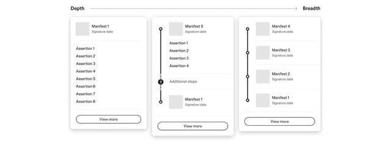
The depth-versus-breadth spectrum for summary design
C2PA UX Guidance · source ↗ Request Comprehension L2 Provenance Summaries
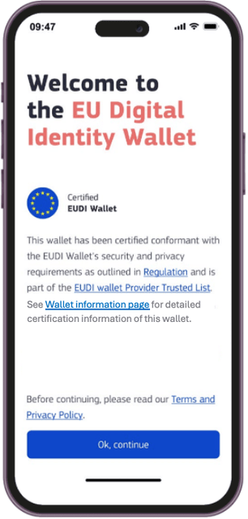
Wallet welcome screen carrying the EUDI Trust Mark with trusted-list and information links
EUDI TS1 · source ↗ Invitation & Onboarding Exemplar Relying Party Trust
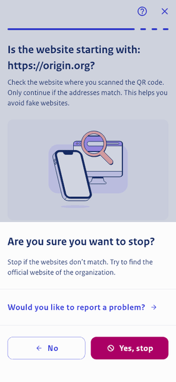
Stop-and-confirm sheet when abandoning disclosure
NL Wallet · source ↗ Consent & Disclosure Decision Exemplar Wallet Consent Disclosure
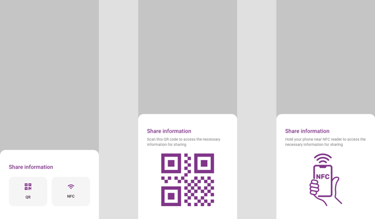
Sharing channel chooser: QR code versus NFC proximity
EUDI ARF · source ↗ Invitation & Onboarding Proximity Cross Device
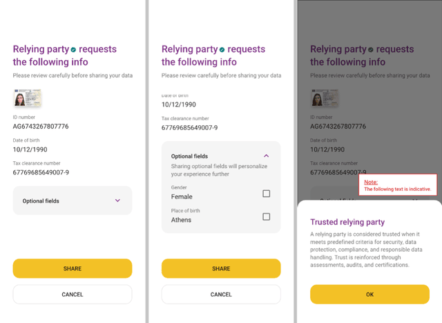
Relying-party attribute request with mandatory versus optional split and trusted-RP explainer
EUDI ARF · source ↗ Consent & Disclosure Decision Exemplar Wallet Consent Disclosure
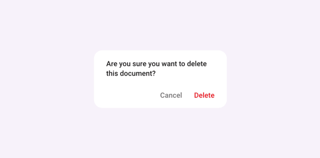
Confirmation dialogs before consequential actions
EUDI ARF · source ↗ Request Comprehension Exemplar Wallet Consent Disclosure
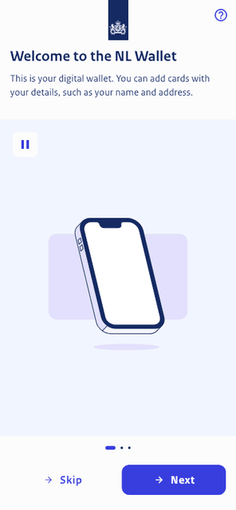
First-run introduction
NL Wallet · source ↗ Invitation & Onboarding Wallet Onboarding Issuance
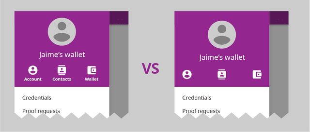
Icon plus text pairing
Bifold · source ↗ Request Comprehension Exemplar Accessibility And Inclusion
Relying-party login with EUDI wallet, mobile
EUDI ARF · source ↗ Enrollment / Issuance Exemplar Wallet Onboarding Issuance
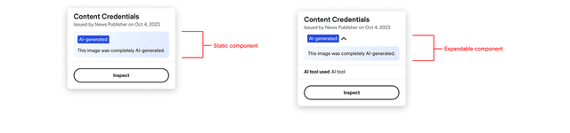
L2 interaction patterns for disclosure, accordion behavior
C2PA UX Guidance · source ↗ Invitation & Onboarding Exemplar Ai Content Disclosure
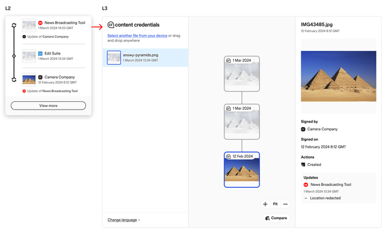
The journey from L2 into L3
C2PA UX Guidance · source ↗ Invitation & Onboarding Exemplar L3 Detail And Repair
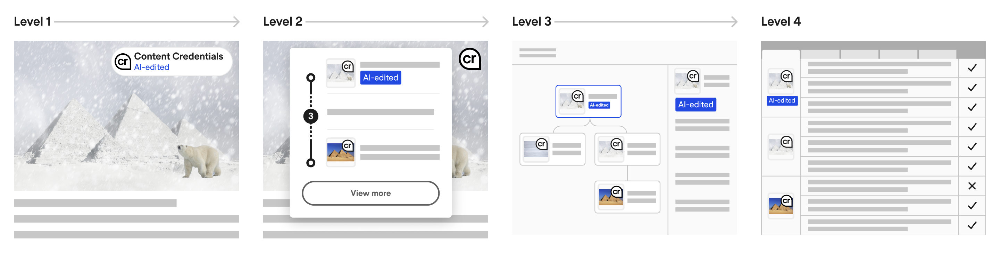
Full progressive disclosure UI carrying AI labels
C2PA · source ↗ Request Comprehension Exemplar AI content disclosure
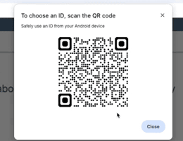
Initial browser QR code
NIST NCCoE mDL · source ↗ Invitation & Onboarding Anti-pattern Mdl Usability Evidence
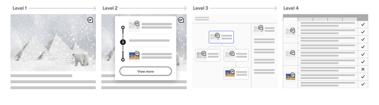
The four disclosure levels, L1 through L4, as a single diagram
C2PA UX Guidance · source ↗ Invitation & Onboarding Exemplar Disclosure Model
Manifest storage settings, local versus remote, with the privacy tradeoff surfaced
C2PA UX Guidance · source ↗ Custody & Recovery Setup Exemplar Creator Control
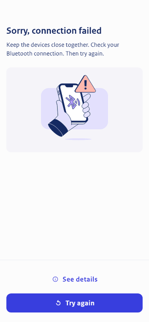
Proximity connection failed
NL Wallet · source ↗ Incident, Recovery & Revocation Proximity Cross Device
Persistent indicator with background
C2PA · source ↗ Invitation & Onboarding Time-based media
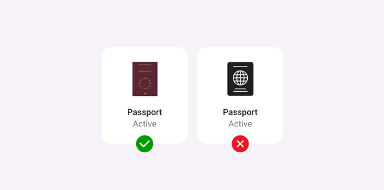
Credential/document presentation layout
EUDI ARF · source ↗ Request Comprehension Wallet Consent Disclosure
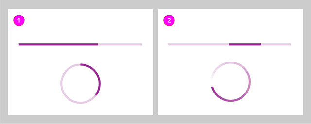
Progress indication during a trust operation
Bifold · source ↗ Invitation & Onboarding Exemplar Accessibility And Inclusion
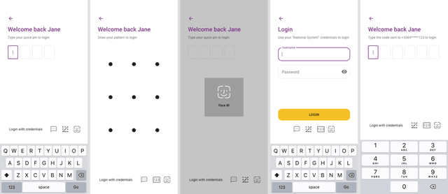
Identification method options: PIN, pattern, biometrics, password, OTP
EUDI ARF · source ↗ Invitation & Onboarding Exemplar Mobile Authentication
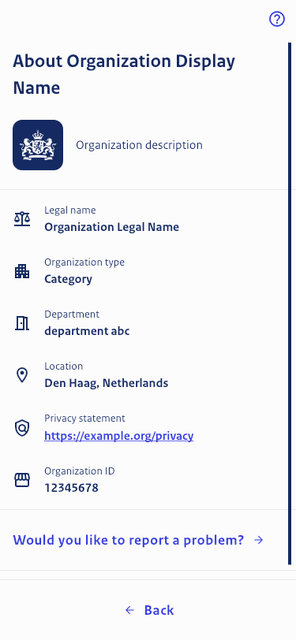
Organisation detail: who is asking and what is known about them
NL Wallet · source ↗ Counterparty Identification & Verification Exemplar Relying Party Trust
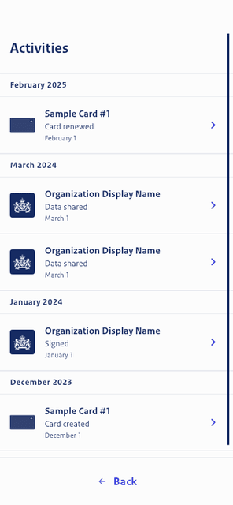
Transaction history overview
NL Wallet · source ↗ Retrospection & Portfolio Exemplar Transaction History Audit
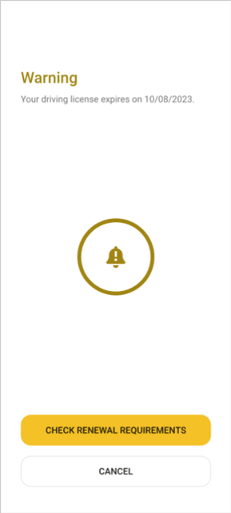
Credential expiry warning with renew call-to-action
EUDI ARF · source ↗ Incident, Recovery & Revocation Exemplar Recovery Revocation Errors
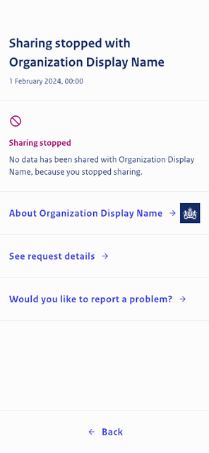
History entry for a cancelled transaction
NL Wallet · source ↗ Retrospection & Portfolio Exemplar Transaction History Audit
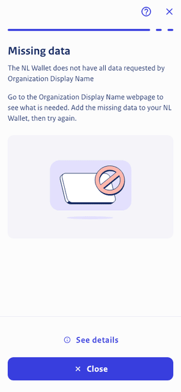
Requested attributes the wallet cannot supply
NL Wallet · source ↗ Incident, Recovery & Revocation Wallet Consent Disclosure
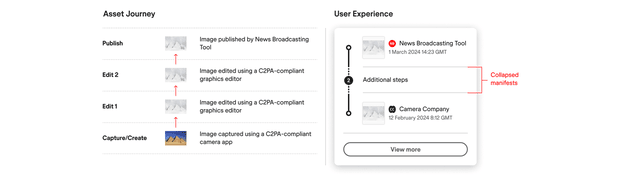
Provenance summary at four manifests, showing the collapse rule
C2PA UX Guidance · source ↗ Invitation & Onboarding Exemplar L2 Provenance Summaries
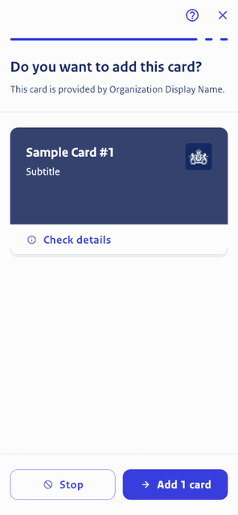
Review a credential before adding it to the wallet
NL Wallet · source ↗ Request Comprehension Wallet Onboarding Issuance
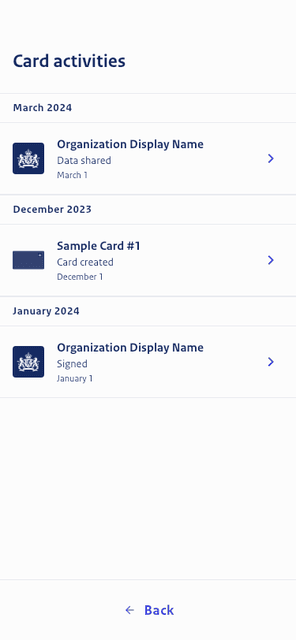
Per-credential usage history
NL Wallet · source ↗ Retrospection & Portfolio Exemplar Transaction History Audit
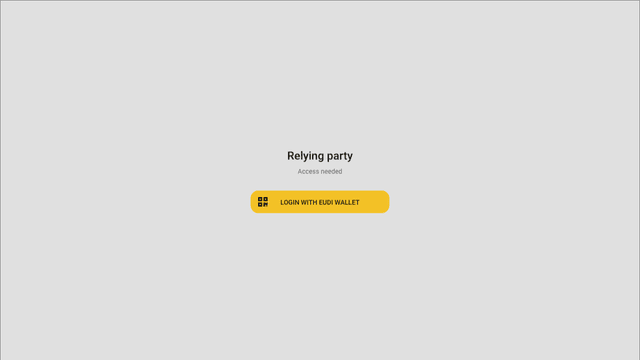
Relying-party login with EUDI wallet, desktop
EUDI ARF · source ↗ Enrollment / Issuance Exemplar Wallet Onboarding Issuance
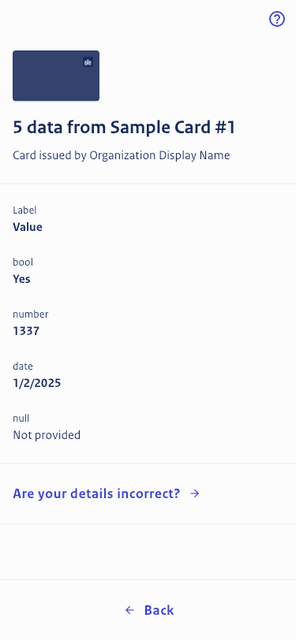
Reviewing attributes across multiple cards
NL Wallet · source ↗ Request Comprehension Exemplar Wallet Consent Disclosure
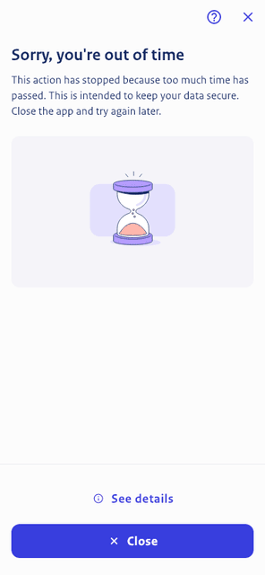
Session expired during disclosure
NL Wallet · source ↗ Incident, Recovery & Revocation Recovery Revocation Errors
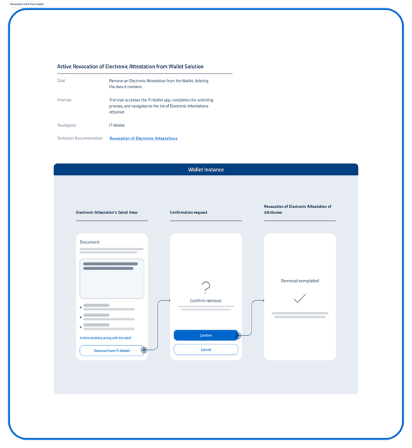
Revoking an attestation from the wallet
IT Wallet · source ↗ Custody & Recovery Setup Exemplar Recovery Revocation Errors
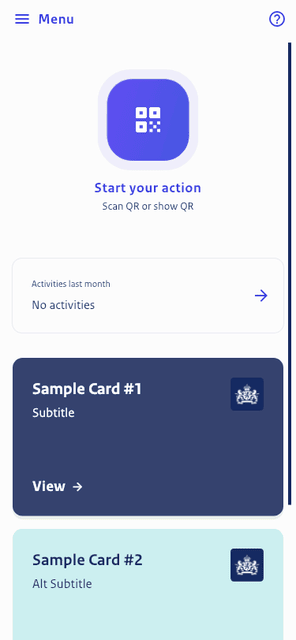
Wallet dashboard, populated
NL Wallet · source ↗ Invitation & Onboarding Wallet Onboarding Issuance
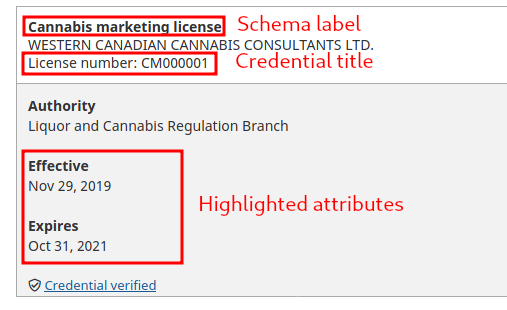
Public credential registry entry with verified badge and annotated anatomy
Aries VCR · source ↗ Retrospection & Portfolio Exemplar Credential Registry And Issuers
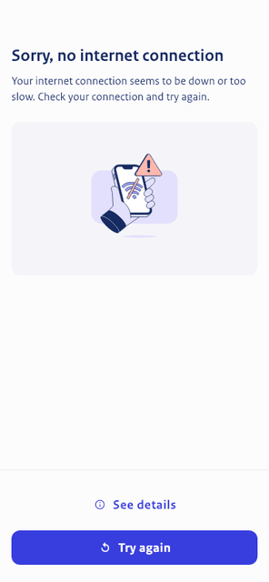
No connectivity
NL Wallet · source ↗ Incident, Recovery & Revocation Recovery Revocation Errors
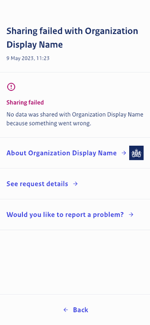
History entry recording that nothing was shared
NL Wallet · source ↗ Retrospection & Portfolio Exemplar Transaction History Audit
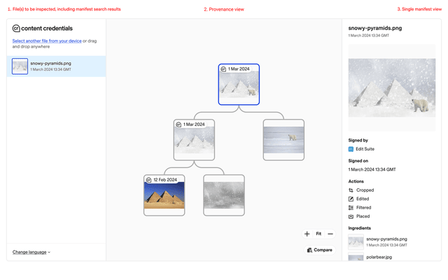
L3 tree view, selectable manifests with assertion panel
C2PA UX Guidance · source ↗ Request Comprehension L3 Detail And Repair
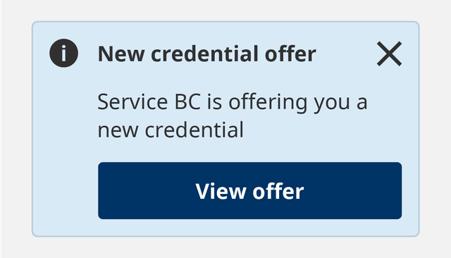
Notification example
BC Wallet · source ↗ Incident, Recovery & Revocation Wallet Visual Language
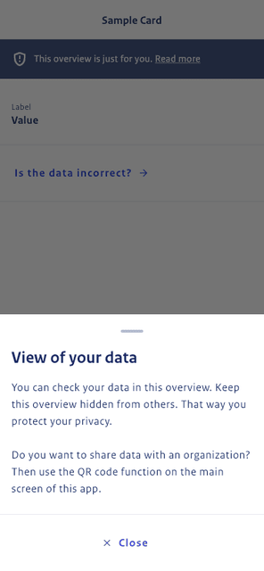
Privacy explainer sheet for card data
NL Wallet · source ↗ Custody & Recovery Setup Transaction History Audit
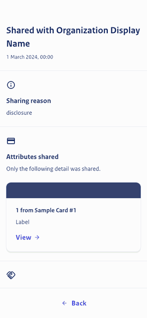
Transaction receipt: what was shared, with whom, when and why
NL Wallet · source ↗ Retrospection & Portfolio Exemplar Transaction History Audit
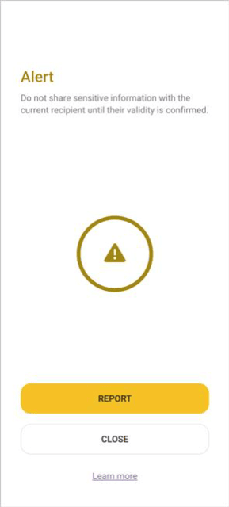
Untrusted relying-party alert with report action
EUDI ARF · source ↗ Counterparty Identification & Verification Exemplar Relying Party Trust
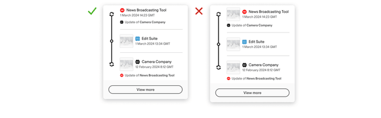
Update manifest without thumbnail
C2PA UX Guidance · source ↗ Retrospection & Portfolio L3 Detail And Repair
Swiss e-ID credential card art
swiyu · source ↗ Invitation & Onboarding Wallet Visual Language
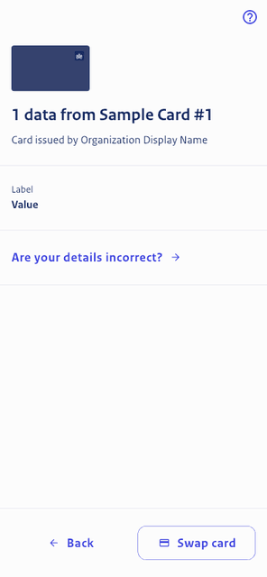
Choosing between alternative credentials that satisfy the same request
NL Wallet · source ↗ Consent & Disclosure Decision Exemplar Wallet Consent Disclosure
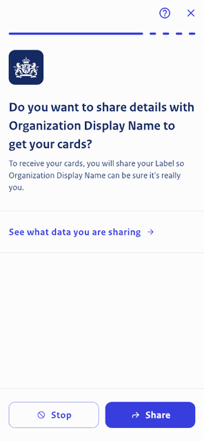
Verify the issuing organisation before accepting a credential
NL Wallet · source ↗ Enrollment / Issuance Exemplar Wallet Onboarding Issuance
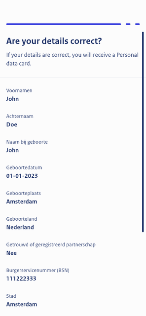
Check the PID data being issued during wallet personalisation
NL Wallet · source ↗ Request Comprehension Wallet Onboarding Issuance
L3 thumbnail labels
C2PA UX Guidance · source ↗ Request Comprehension Ai Content Disclosure
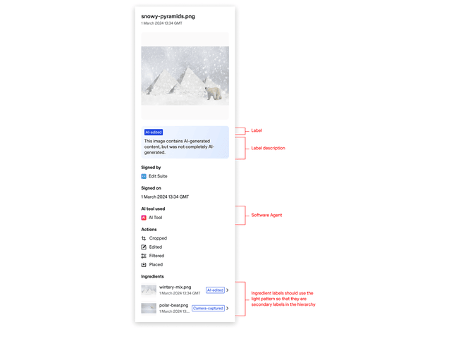
L3 manifest panel with description
C2PA UX Guidance · source ↗ Request Comprehension Ai Content Disclosure
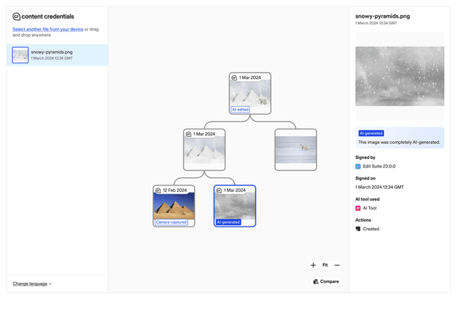
L3 labeled tree view
C2PA UX Guidance · source ↗ Request Comprehension Ai Content Disclosure
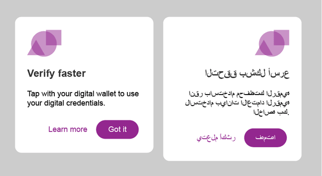
Left-to-right and right-to-left rendering side by side
Bifold · source ↗ Invitation & Onboarding Exemplar Accessibility And Inclusion
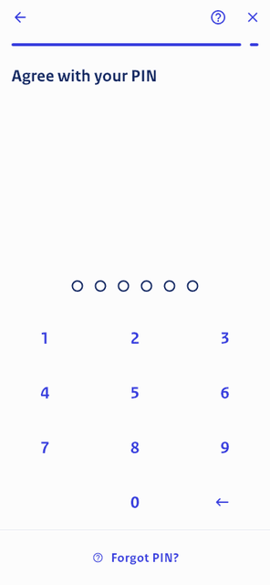
PIN confirmation as the act of consent
NL Wallet · source ↗ Consent & Disclosure Decision Exemplar Mobile Authentication
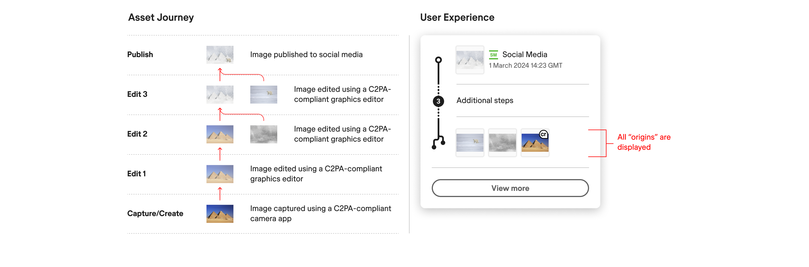
Multiple origins plus manifests
C2PA · source ↗ Request Comprehension L2 provenance summaries
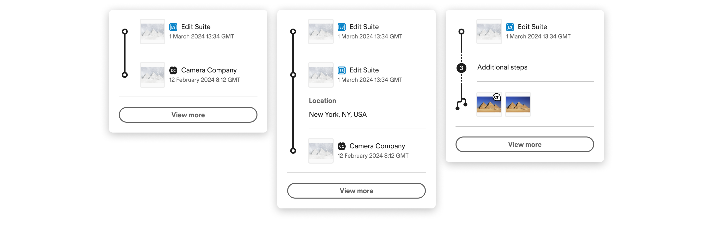
Customized combinatory summaries by vertical
C2PA · source ↗ Request Comprehension L2 provenance summaries
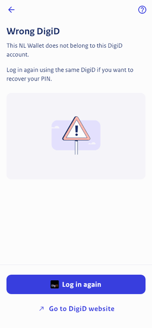
PIN recovery blocked because the identity does not match
NL Wallet · source ↗ Incident, Recovery & Revocation Recovery Revocation Errors
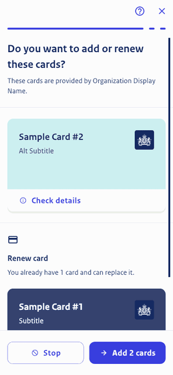
Review new and updated credentials together
NL Wallet · source ↗ Enrollment / Issuance Exemplar Wallet Onboarding Issuance
Attribute label conventions
EUDI ARF · source ↗ Request Comprehension Exemplar Wallet Consent Disclosure
PIN recovery, entry point
NL Wallet · source ↗ Incident, Recovery & Revocation Exemplar Recovery Revocation Errors
Unknown-source warning chip
CAI Verify · source ↗ Incident, Recovery & Revocation Exemplar Provenance Display Implementations
Content summary card: issuer, date, process and AI tool used
CAI Verify · source ↗ Request Comprehension Exemplar Provenance Display Implementations
Incorrect credentials entry
EUDI ARF · source ↗ Incident, Recovery & Revocation Exemplar Mobile Authentication
Logo usage guidelines
Login.gov · source ↗ Invitation & Onboarding Exemplar Prescriptive Practices
Presenting a QR code for proximity engagement
NL Wallet · source ↗ Execution & Confirmation Exemplar Proximity Cross Device
Repeated failed authentication with lock-out timer
EUDI ARF · source ↗ Incident, Recovery & Revocation Mobile Authentication
Error message construction
EUDI ARF · source ↗ Incident, Recovery & Revocation Recovery Revocation Errors
Remote presentation, cross device
IT Wallet · source ↗ Execution & Confirmation Proximity Cross Device
Wallet deactivation
IT Wallet · source ↗ Custody & Recovery Setup Exemplar Recovery Revocation Errors
Dashboard with credential expiring in 10 days
NL Wallet · source ↗ Incident, Recovery & Revocation Exemplar Recovery Revocation Errors
Compare state, two manifest thumbnails side by side
C2PA UX Guidance · source ↗ Invitation & Onboarding Exemplar L3 Detail And Repair
Verify the relying party's URL before disclosing
NL Wallet · source ↗ Counterparty Identification & Verification Exemplar Relying Party Trust
Full three-panel Content Credentials inspector
CAI Verify · source ↗ Request Comprehension Exemplar Provenance Display Implementations
Flexible input handling
EUDI ARF · source ↗ Invitation & Onboarding Exemplar Mobile Authentication
Authentication, same device
IT Wallet · source ↗ Invitation & Onboarding Exemplar Mobile Authentication
Remote presentation, same device
IT Wallet · source ↗ Execution & Confirmation Proximity Cross Device
Regenerated QR code after timeout
NIST NCCoE mDL · source ↗ Invitation & Onboarding Anti-pattern Mdl Usability Evidence
Human Trust Experience explorer, snapshot 4 August 2026 at 17:51. Screens are reproduced under each
item's stated licence with attribution. The living version, with live filtering, ratings and contribution,
is at https://platform.validant.ai/trust-experience .